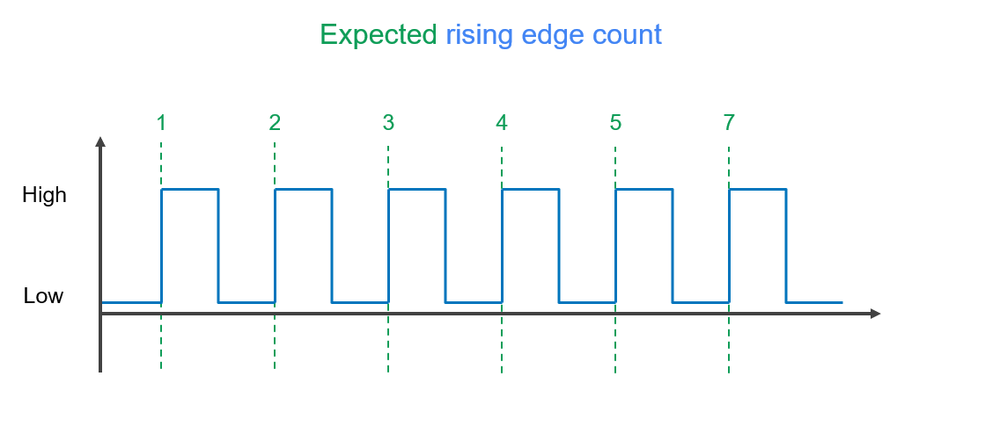
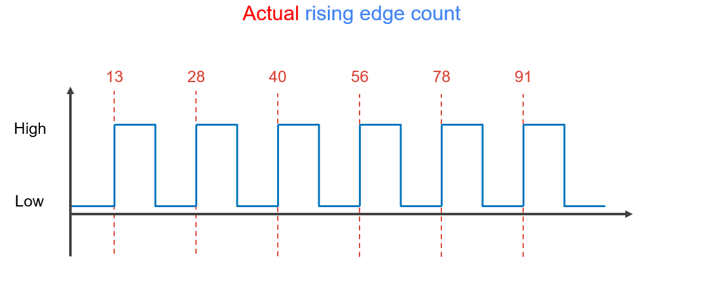
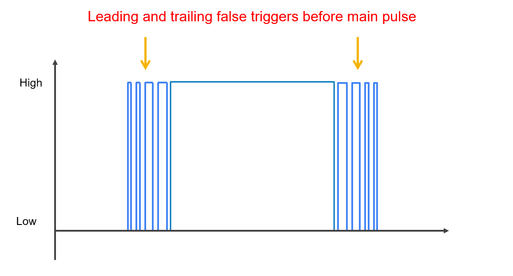

Understanding your assumptions and thoroughly questioning them is crucial to
building complex systems. I’ve found that the vast majority of mistakes I make
in hardware are where I let my intuition develop an argument for why something
is occurring. Intuition easily justifies the bad assumptions that thrive in our
knowledge gaps.
A few months back a teammate and I ran into a bug where a sensor (IR
photointerrupter) was counting way too many times when it was triggered. It was
a particularly weird bug because we had another set of these already implemented
and they didn’t have this problem. We started looking into the code to see if it
was issue with how we were counting the interrupts.

After some careful examination of the software, we started looking at the
physical hardware. The physical hardware seemed fine. The voltages were exactly
as expected when the sensor was blocked and unblocked. I hooked up the outputs
to a digital logic analyzer and blocked and unblocked the sensor. Sure enough,
leading up to the actual pulse were lots of tiny pulses increasing in duty
cycle. There were also tiny pulses trailing the actual pulse, decreasing in duty
cycle. We went and checked our correctly functioning implementation and
surprisingly the small leading and trailing pulses were there too! But for some
reason they were being counted properly by the MCU. We were confused.
So we attached analog leads to the output of our sensor. We blocked and unblocked
it, expecting to see the false pulse train leading up to the actual pulse. Nope.
Perfectly clean rising and falling edges on each of the implementations, exactly
the same way. We were very confused.



This is painful to recount because the solution now appears so
obvious in hindsight. We had evidence suggesting that our MCU was performing some strange
counting of the rising and falling edges of our actual pulse. It was right in
front of us. We had data showing that the duty cycle of the false triggers were
increasing as the it came closer to the actual pulse. What were we missing?
We had made a major assumption that analog-to-digital conversion on the logic
analyzer would be able to get a clean reading of the sensor output being pulled
high and low. We assumed that the measurement tool we were using wouldn’t also
be having false triggers. We were really thrown off the trail because we had
another implementation of the same sensors functioning properly. All of this
combined, we let our intuition grasp for answers rather than consider the facts.
—
After a bit of discussion, some forum reading, and more analysis of the signals
we figured out the problem. The Schmitt Trigger implemented on both our logic
analyzer and on our MCU were getting triggered by the rising and falling edges
of the sensor being blocked and unblocked. This is a pretty common occurrence
and it can usually be resolved by low-pass filtration in hardware right before
the signal enters the MCU.
Schmitt Trigger Edge Detection

The reason the count on the other implementation appeared correct was because we were performing quadrature
encoding with the sensors and we would increment in one direction and decrement
in the other direction. The false pulses one on sensor offset the false pulses
on the other since these were being used in conjunction. This is a little
technical and very specific to our application but it basically masked the fact
that the sensors had all the extra triggers because the end result always
appeared correct.
Quadrature Encoder Waveforms

We were really confused by all the evidence presented to us simply because of the assumptions we were making. Multiple logical
explanations could be presented but would conflict one another. Keep an eye out
for these type of inconsistencies, as they’re a strong indicator of bad of
assumptions.
— 10.22.2017